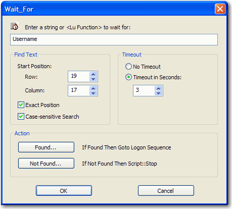

BlueZone scripts support the ability to wait for a specific text string or LU Function to appear in the host session screen. Wait_For is one of the more versatile BlueZone script functions.
The purpose of using Wait_For in a BlueZone script is to cause the script execution to suspend until the specified text string is found in the host session window. This feature is useful if you are running a script that automatically logs the user into an application and you don't want the script to enter the user name and password until the host is ready.
Also, this feature is useful if you want to be absolutely certain that the host is on a specific screen before the script continues.
In addition, you can set a time out value so that if the text string is not found within the desired time, you can script a predicable outcome.

For example, you can wait for the desired text string starting from the very upper left hand corner of the host screen and search to the very end of the screen. Or, if desired, you can wait for the desired text string starting at a specific row and column location, or you can wait for the desired string only when found at a specific row and column on the host screen.
Wait_For "Username" starting at position 1,1 to the end of the screen
Wait_For "Username" starting at position 12,6 to the end of the screen
Wait_For "Username" at exactly position 24,1